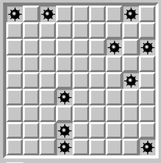
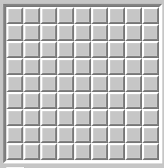
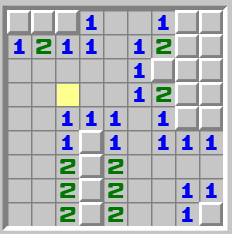

In what concerns the continuous evaluation solving exercises grade during the semester, you should submit until 23:59 of December 20th
(this exercise will still be available for submission after that deadline, but without couting towards your grade)
[to understand the context of this problem, you should read the class #10 exercise sheet]
In this problem you should read from the standard input using functions such as input() and you should write to the standard output using functions such as print()
(you are expected to read the class instructions, that will help you build a solution with structured programming and incremental development)
Max Mayfield has always loved video games and she’s been thinking about how they could help her deal with the real dangers around Hawkins. With rifts to the Upside Down appearing more frequently, she wants to train her instincts for spotting hidden threats, just like in her favorite games. While trying out new games at the Hawkins Arcade, she stumbles upon Minesweeper. At first, it seems like a simple puzzle, but Max quickly realizes it’s a perfect test for her skills: predicting where dangers lie, avoiding traps, and carefully uncovering safe areas, exactly the kind of thinking she’ll need if the Upside Down ever reaches her neighborhood again.
Inspired, Max decides to create a Minesweeper simulator to sharpen her reflexes and strategy. In particular, she wants to see the result of the first move on a board: which safe zones open up and where potential dangers remain. Even for a skilled gamer like her, the logic can be tricky, so she turns to you for help. Your task is to simulate the Minesweeper board after Max’s first click, revealing the safe areas while keeping hidden threats concealed, just like preparing for a real encounter with the Upside Down.
The figures below illustrate an example minesweeper game on a 9 by 9 grid:
 |
 |
 |
||
| The (initially secret) position of the bombs |
Initial grid (Max doesn't know where the bombs are) |
What Max sees after a first move on the yellow cell |
The Minesweeper rules:
B) representing a hidden trap, or
.) representing safe ground.
B), reveal only that cell (as it detonates).
.), reveal the number of bombs in adjacent cells (horizontal, vertical, and diagonal).
B) if there was a bomb on that position, or
.) if there are no adjacent bombs.
?
Write a program that, given the location of the bombs and the coordinates of the first move, produces the output of that first move.
The first line contains two positive integers: the number of rows R and columns C that determine the size of the grid.
This is followed by R lines of characters representing the bombs location. Empty cells are represented by '.' and bomb cells by 'B'.
The last line contains two positive integers: the coordinates y and x of the cell selected on the first move (y indicates the row, from 1 to R, where 1 is the top row; x indicates the column, from 1 to C where 1 is the leftmost row).
You must print the output of the first move as previously described (check the example outputs).
The following limits are guaranteed in all the test cases that will be given to your program:
| 1 ≤ R,C ≤ 100 | dimensions of the grid | |
| 1 ≤ y ≤ R | y coordinate (row) of first move | |
| 1 ≤ x ≤ R | x coordinate (column) of first move |
| Example Input 1 | Example Output 1 |
|---|---|
9 9 B.B....B. ......... ......B.B ......... .......B. ...B..... ......... ...B..... ...B....B 3 4 |
???1..1?? 1211.12?? .....1??? .....12?? ..111.1?? ..1?1.111 ..2?2.... ..2?2..11 ..2?2..1? |
| Example Input 2 | Example Output 2 |
|---|---|
9 9 B.B....B. ......... ......B.B ......... .......B. ...B..... ......... ...B..... ...B....B 1 3 |
??B?????? ????????? ????????? ????????? ????????? ????????? ????????? ????????? ????????? |
| Example Input 3 | Example Output 3 |
|---|---|
9 9 B.B....B. ......... ......B.B ......... .......B. ...B..... ......... ...B..... ...B....B 1 4 |
???1????? ????????? ????????? ????????? ????????? ????????? ????????? ????????? ????????? |
Content by Pedro Ribeiro and Bernardo Portela (DCC/FCUP), migrated from dcc.fc.up.pt/~pribeiro/aulas/ip2526/problems/ip100.html.